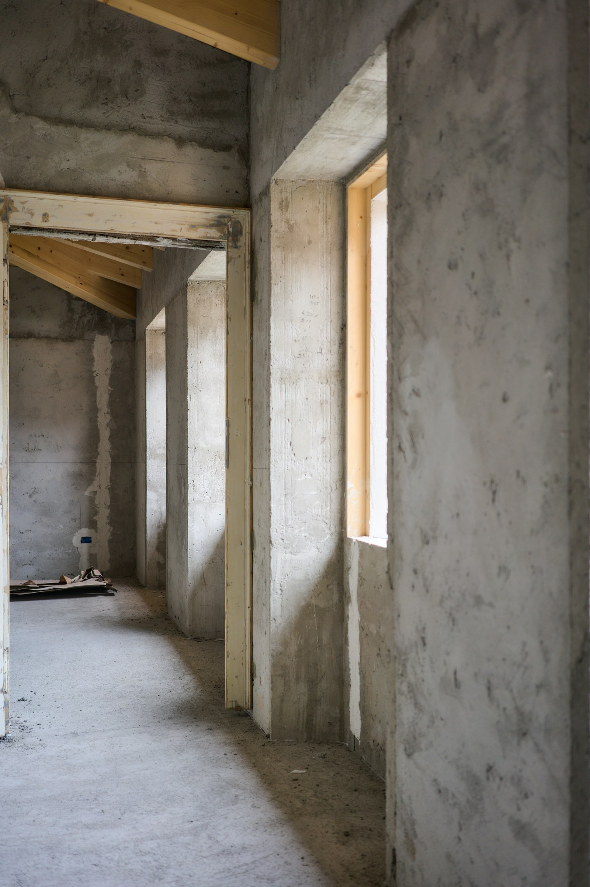
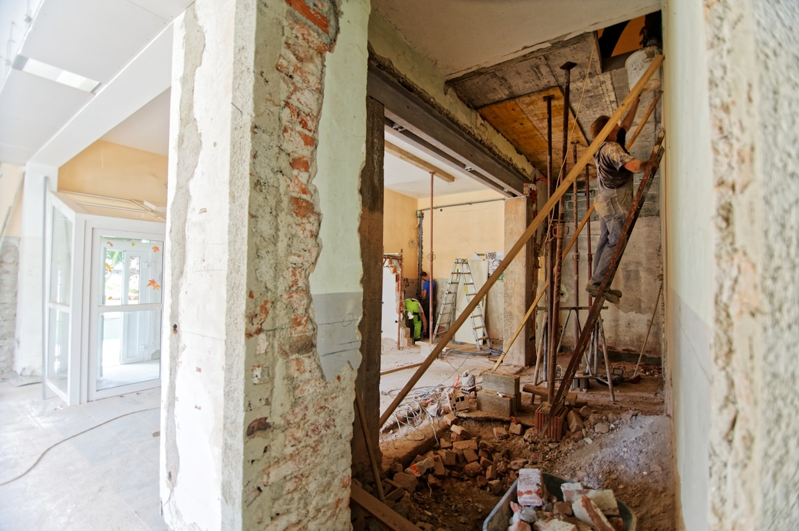

01стены
Демонтаж стен и перегородок
Кирпич, пеноблок, гипсокартон и ненесущие бетонные конструкции.

01
Квартиры, ванные комнаты, коммерческие помещения, стены и стяжка. Разберём, упакуем и вывезем — по согласованной смете.
Демонтаж — это не хаотичная ломка. Сначала определяем, что можно разбирать, защищаем лифт, стены и коммуникации, после этого начинаем работу.
Берём локальные задачи и комплексный демонтаж под ключ в квартирах и коммерческих помещениях Москвы и области.
Кирпич, пеноблок, гипсокартон и ненесущие бетонные конструкции.

01Мы не показываем случайную цену: на стоимость влияют материал, толщина, этаж, доступ, объём и вывоз. После фото согласуем точную смету.
В прототипе стоят тематические фотозаглушки. Перед запуском заменим их на ваши реальные объекты, сроки, стоимость и видео.
Фото · сроки · состав работ · результат
До / после
Фотоотчёт по этапам
Вы присылаете адрес, площадь и несколько фотографий в Telegram.
Уточняем конструктив, доступ, объём мусора и ограничения по шуму.
Согласовываем состав работ, сроки и стоимость до начала демонтажа.
Защищаем общие зоны, разбираем, сортируем и упаковываем отходы.
Грузим мусор, подметаем площадку и сдаём готовый объект.
Если вашего вопроса нет в списке — напишите напрямую в Telegram.
Да. Для предварительной оценки обычно достаточно 5–10 фото, площади и короткого описания. Если конструктив сложный, согласуем бесплатный осмотр.
Вывоз рассчитывается отдельно или включается в общую смету — как удобнее. До начала работ вы будете видеть обе части стоимости.
Да. Учитываем разрешённое время шумных работ, защищаем лифт и общие зоны, мусор выносим в мешках.
Можно. Берём как комплексные объекты под ключ, так и локальные задачи из каталога выше.
В рабочей версии сайта укажем согласованный пакет: смета, договор, акт и документы по вывозу — если они требуются для объекта.
Москва и Московская область
Ежедневно, время выезда — по договорённости